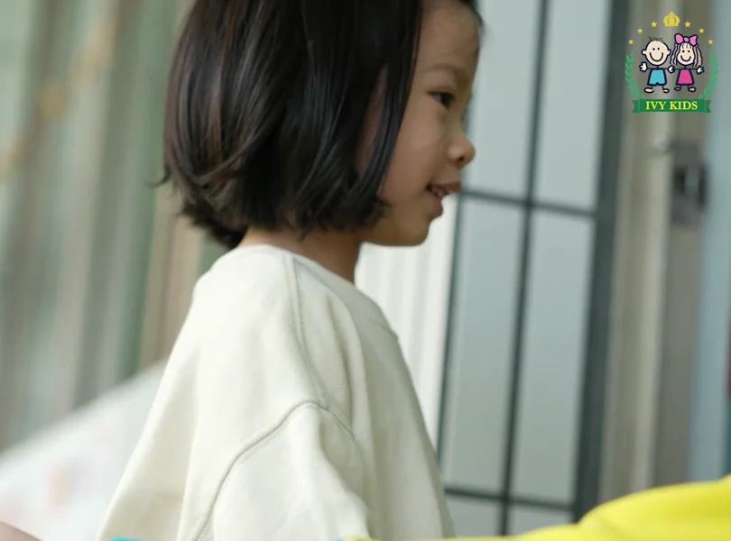
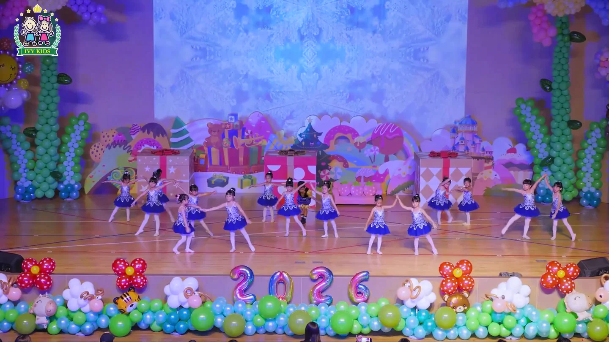
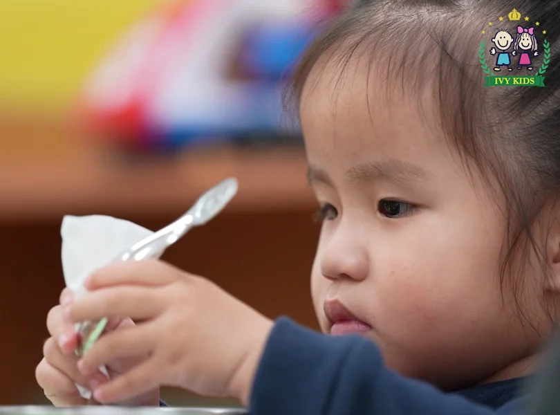
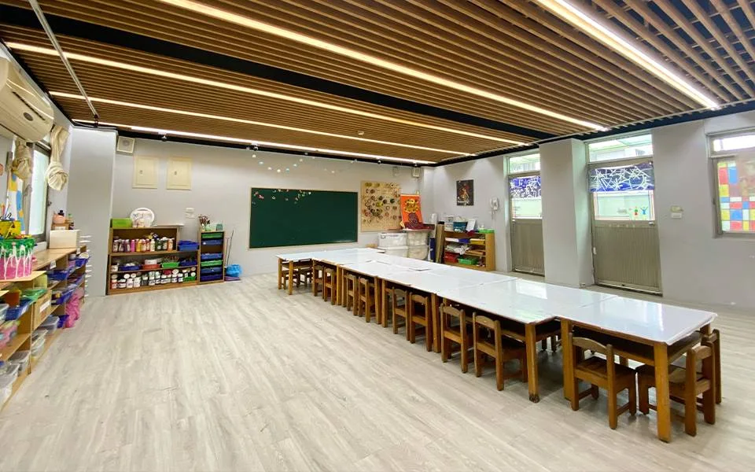
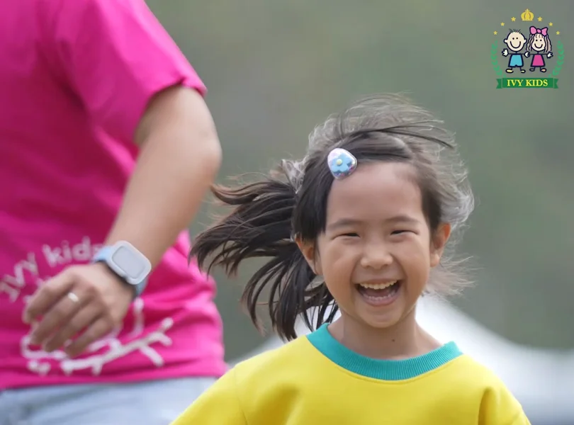

01 / 早安入園HELLO, NEW DAY
一聲早安，
開啟今天的小冒險。
01 / 早安入園HELLO, NEW DAY
放好小書包，和老師、朋友打聲招呼。
在熟悉的陪伴裡，找到自己的步調。

孩子的一天A DAY AT IVY
每張相片是 WebGL 裡的一張紙：會顯影、會彎、有光。點一下翻到背面。
看到最後，把它們一張一張收好。

01 / 早安入園HELLO, NEW DAY
01 / 早安入園HELLO, NEW DAY
放好小書包，和老師、朋友打聲招呼。
在熟悉的陪伴裡，找到自己的步調。

02 / 好奇探索WONDER & DISCOVER
02 / 好奇探索WONDER & DISCOVER
摸一摸、想一想，再和同伴試一次。
好奇的小眼睛，正在認識大大的世界。

03 / 午餐時光I CAN DO IT
03 / 午餐時光I CAN DO IT
洗洗手、準備餐具，練習照顧自己。
每天的小事情，都藏著成長的機會。

04 / 安靜片刻A LITTLE REST
04 / 安靜片刻A LITTLE REST
把熱鬧的節奏放慢，留點安靜給自己。
養足精神，再迎接午後的新發現。

05 / 午後玩耍LET'S PLAY TOGETHER
05 / 午後玩耍LET'S PLAY TOGETHER
跑一跑、笑一笑，發現身邊的新鮮事。
一起玩的時候，也練習分享與表達。
06 / 帶故事回家A DAY TO REMEMBER
06 / 帶故事回家A DAY TO REMEMBER
帶上書包，也帶上今天的新發現。
把一件開心的小事，分享給最愛的人。
捲到這裡，相片會自己飛進盒子；點任何一張，回到那個時刻。